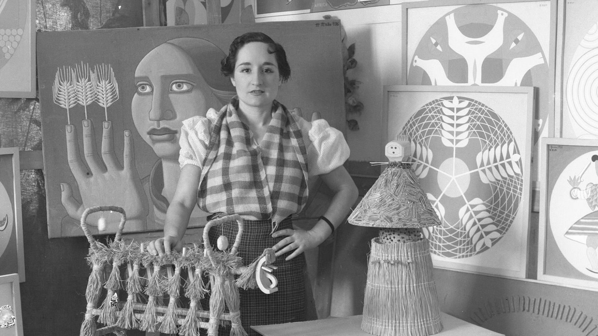
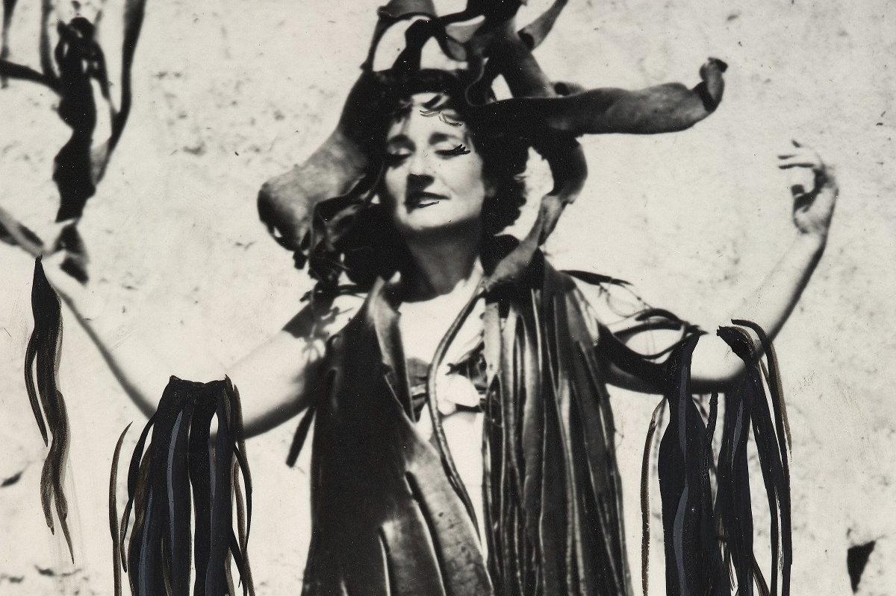
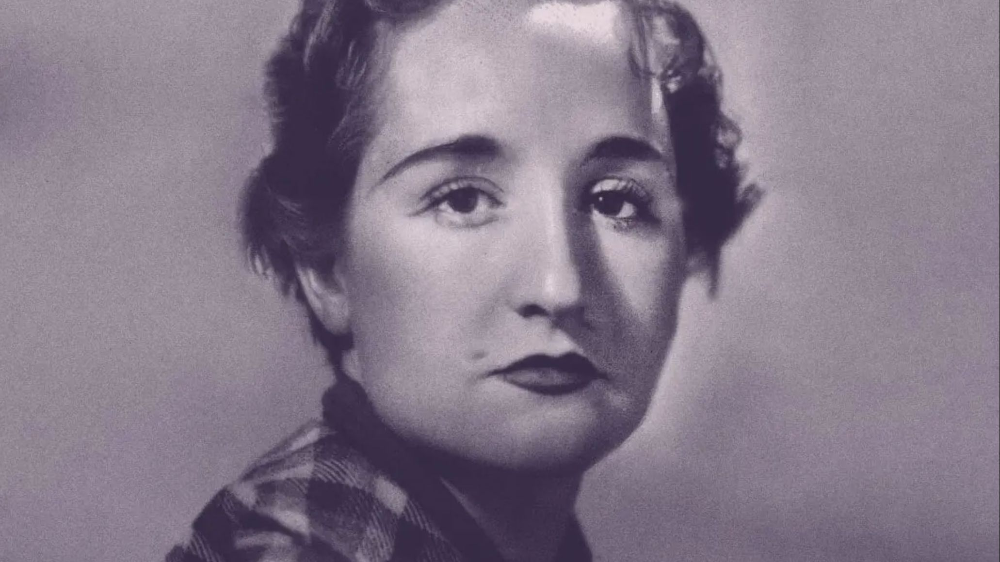

Iconas
Maruja Mallo




Ficha rápida da icona
- Nome: Maruja Mallo
- Nome completo: Ana María Gómez González (Maruja Mallo)
- Naceu: Viveiro (Lugo), 5 de xaneiro de 1902
- Morreu: Madrid, 6 de febreiro de 1995
- Profesión: Pintora
- Coñecida por: Ser unha das grandes artistas da Xeración do 27 e unha das fundadoras de Las Sinsombrero.
A icona en si
Hai un tempo fun pasar o día a Viveiro. Mentres paseaba polo casco histórico vin unha placa nunha fachada que dicía: «Aquí viviu Maruja Mallo». Teño que recoñecer que, ata ese momento, apenas oíra falar dela. Deume curiosidade e, cando cheguei á casa, empecei a buscar quen era aquela muller que merecía unha placa no medio da vila.
E menos mal que o fixen.
Maruja Mallo, nada en Viveiro en 1902, foi unha das grandes pintoras da Xeración do 27 e unha das fundadoras de Las Sinsombrero, un grupo de mulleres que decidiron romper co papel que a sociedade lles reservaba.
Sempre me fixo graza a historia de como un día ela, Federico García Lorca, Salvador Dalí e Margarita Manso decidiron quitar o sombreiro mentres paseaban pola Porta do Sol de Madrid para "desconxestionar as ideas". Parece un xesto pequeno, pero naquel momento foi todo un escándalo. Ás veces os cambios comezan coas cousas máis sinxelas.
O que máis me gusta de Maruja é que nunca pareceu ter medo a ser diferente. Estudou na Academia de Belas Artes de San Fernando, compartiu amizade con Dalí, Lorca ou Rafael Alberti e expuxo a súa obra cando moi poucas mulleres conseguían abrirse paso no mundo da arte.
A Guerra Civil obrigouna a exiliarse e pasou máis de vinte anos vivindo entre Arxentina, Chile e outros países de América Latina, pero nunca deixou de pintar nin de crear.
Hai quen a compara con Frida Kahlo, e entendo por que. As dúas construíron unha imaxe moi persoal e viviron a arte como unha forma de expresar quen eran. Pero creo que Maruja ten unha personalidade propia que ás veces queda un pouco agochada detrás desa comparación. Era irreverente, libre e tiña unha maneira de mirar o mundo que se nota en cada un dos seus cadros.
Se teño que escoller unha obra, quédome con La mujer de la cabra. Non sei explicar moi ben por que. Hai algo nesa pintura que me fai parar un pouco máis do normal cada vez que a vexo. Como pasa coas lendas, sinto que agocha un significado que nunca rematas de descubrir de todo. Gústanme esas obras que che obrigan a volver unha e outra vez porque sempre atopas un detalle novo.
Quizais por iso me deu tanta rabia non coñecela antes. Ás veces pensamos que xa coñecemos as grandes figuras da nosa cultura, e despois aparece alguén como Maruja Mallo para lembrarche que aínda quedan moitas historias por descubrir. E, sinceramente, creo que ela merece ser unha delas.
Bibliografía
Maruja Mallo - Leer.es. (2024, 21 maio). Leer.es.
https://leer.es/proyectos/las-sinsombrero/vida-y-obra/maruja-mallo/
Maruja Mallo. (1902). HA!
https://historia-arte.com/artistas/maruja-mallo
Maruja Mallo. (s. f.). Universo Lorca.
https://www.universolorca.com/personaje/mallo-maruja-ana-maria-gomez-gonzalez/